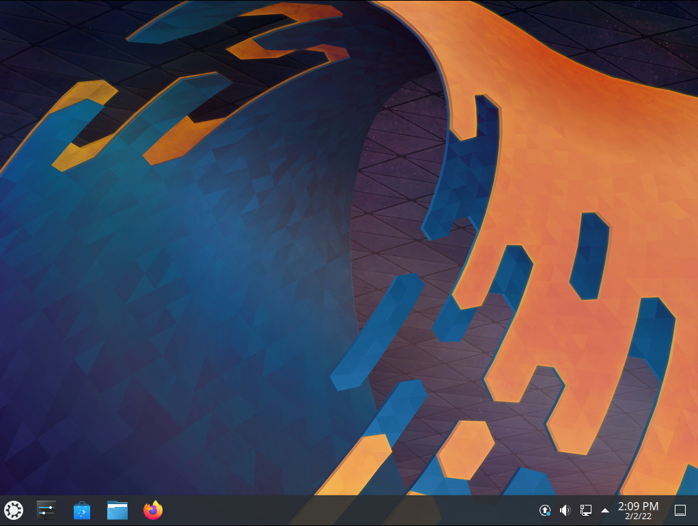

Kubuntu’s Documentation
Welcome to Kubuntu
Kubuntu is a user-friendly Linux-based operating system that use the KDE Plasma Desktop. With a predictable six-month release cycle as part of the Ubuntu project, Kubuntu is the Linux distribution for everyone.
Kubuntu includes more than 1,000 default packages (applications or utilities) and has access to more than 64,000 other packages to suit your needs. Kubuntu is based on the Linux kernel and includes the core Ubuntu applications as well as KDE software. Kubuntu’s core applications include software for the most common needs, like:
Browsing the web.
Personal Information Manager which includes email.
Office applications
Playing multimedia files.
Plus much more!
The Kubuntu Philosophy
Kubuntu will always use the solid base of the Ubuntu project, plus the latest from the KDE project. As part of the Ubuntu project and community, Kubuntu will continue to use the infrastructure and support that the Ubuntu project offers. We will strive to be the best KDE based Linux distribution available.
Kubuntu will always be free of charge. There is no extra fee for an enterprise edition; we make our best work available to everyone on the same free terms.
Kubuntu will always include the best translations and accessibility infrastructure that the free software community has to offer, to make Kubuntu usable by as many people as possible.
Kubuntu will always be committed to the principles of free software and open source development; we shall encourage people to use free and open source software, improve it, and pass it on.
What is Linux?
Linux is an operating system kernel that resembles the Unix operating system. The kernel is the main software required for any operating system, providing a communication bridge between hardware and software. Linux has become a leading element of the worldwide movement to embrace free and open source software. The term “GNU/Linux” is a way of referring to operating systems based on the Linux kernel combined with parts from the GNU Project.
What is KDE?
KDE is an international technology community that creates and supports free software for desktop and portable computing. Among KDE’s products are a modern desktop system for Linux and Unix platforms, comprehensive office productivity and groupware suites, as well as hundreds of software applications in various categories including internet and web applications, multimedia, entertainment, education, graphics, and software development. KDE software is translated into more than 65 languages and is built for ease of use with modern accessibility principles in mind. KDE’s full-featured applications run natively on Linux, BSD, Solaris, Windows, and macOS. The Plasma Desktop is the default desktop for Kubuntu.
Thank You!
The entire Kubuntu team thanks you for choosing Kubuntu!
- Authors
Kubuntu Team
- Version
22.04.0 ; Released: TBA
Contents: